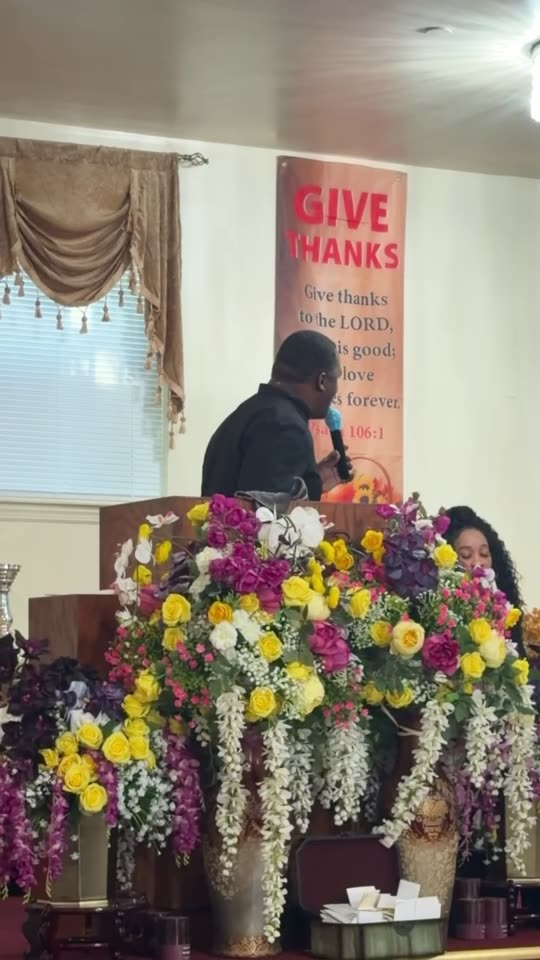

GREATER ST. PAUL · CHURCH LIFE
Our Shared
Moments.
From Sunday worship to celebrations on Rockaway Avenue, these are the people and moments that make Greater St. Paul home.
See the photos ↓FAITH · FELLOWSHIP · FAMILY
Through Our Lens.
29 moments


BECOME PART OF THE STORY
We would love to meet you.
Join us for Sunday worship, 12:30–2:30 PM, at 44 Rockaway Avenue in Brooklyn. Follow along on Instagram ↗
Plan your visit ↗